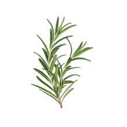

Base notes describe the oils that stay with you the longest. They have heavy molecules that take much longer to evaporate. Base notes add depth and richness to a blend as well as acting as an anchor for the entire perfume.
CEDAROOD
Anti-inflammatory, antiseborrheic, antiseptic, depurative, pectoral, regenerative, restorative and tonic. It has a calming and soothing effect on the mind and is of great help in conditions associated with anxiety and nervous tension. It is also of value in cases of arthritis and rheumatism.
Base notes describe the oils that stay with you the longest. They have heavy molecules that take much longer to evaporate. Base notes add depth and richness to a blend as well as acting as an anchor for the entire perfume.
SANDALWOOD
Antiseptic, antispasmodic, calmative, emollient, expectorant and sedative. Has a harmonizing and calming effect which reduces tension and confusion and is ideal for use in depression, hectic daily lifestyles and states of fear, stress, nervous exhaustion, chronic illness and anxiety.
Heart notes are scents that emerge from a blend right after the top notes have evaporated away and give perfumes their main body. They do not evaporate as quickly as top notes and linger on the skin longer. Lavender is an example of a middle note.
CINNAMON
Analgesic, anthelmintic, antibacterial, antifungal, antimicrobial, antiputrescent, antiseptic, antispasmodic, antiviral, carminative, circulatory, depurative, immunostimulant, stimulant and tonic.
Heart notes are scents that emerge from a blend right after the top notes have evaporated away and give perfumes their main body. They do not evaporate as quickly as top notes and linger on the skin longer. Lavender is an example of a middle note.
GINGER
Analgesic, antiseptic, antispasmodic, bactericidal, carminative, cephalic, expectorant, febrifuge, laxative, rubefacient, stimulant, stomachic, sudorific and tonic. Helps easing colds and flu, nausea, motion sickness, morning sickness, muscle aches and pains, as well as poor circulation and arthritic pain.
Heart notes are scents that emerge from a blend right after the top notes have evaporated away and give perfumes their main body. They do not evaporate as quickly as top notes and linger on the skin longer. Lavender is an example of a middle note.
LAVENDER
Antiseptic, analgesic, anti-convulsant, anti-depressant, anti-rheumatic, anti-spasmodic, anti-inflammatory, antiviral, cicatrizing, cordial, cytophylactic, hypotensive, sedative, soporific and vulnerary. Has a calming effect on the nerves, relieving tension, depression, panic, hysteria and nervous exhaustion in general and is effective for headaches, migraines and insomnia.
Top notes are first impression scents, the one that you smell first when you breathe in a blend. Top notes have tiny, light molecules that evaporate quickly. These top note scents are often described as cheerful, bright, light, refreshing.
BERGAMOT
Antibacterial, antidepressant, antiseptic, antispasmodic, calmative, carminative, frebrifuge, sedative, stomachic and vulnerary. It can be used in the treatment of depression, stress, tension, fear, hysteria, infection (all types including skin), anorexia, psoriasis, eczema and general convalescence.
Top notes are first impression scents, the one that you smell first when you breathe in a blend. Top notes have tiny, light molecules that evaporate quickly. These top note scents are often described as cheerful, bright, light, refreshing.
ORANGE SWEET
Antibacterial, antiseptic, calmative, cholagogue, depurative, diuretic, sedative, stimulant, stomathic and tonic. It is a sunny and radiant oil, bringing happiness and warmth to the mind and helps people to relax and helps children to sleep at night. It can be used effectively on the immune system, as well as for colds and flu and to eliminate toxins from the body.
Top notes are first impression scents, the one that you smell first when you breathe in a blend. Top notes have tiny, light molecules that evaporate quickly. These top note scents are often described as cheerful, bright, light, refreshing.
ROSEMARY
Analgesic, antimicrobial, antiseptic, antispasmodic, carminative, cicatrizing, decongestant, depurative, diuretic, immunostimulant, insect deterrent, restorative, spasmolytic, stomachic, stimulant. It has a pronounced action on the brain and the central nervous system and is wonderful for clearing the mind and mental awareness, while having excellent brain stimulant properties, as well as improving memory.
